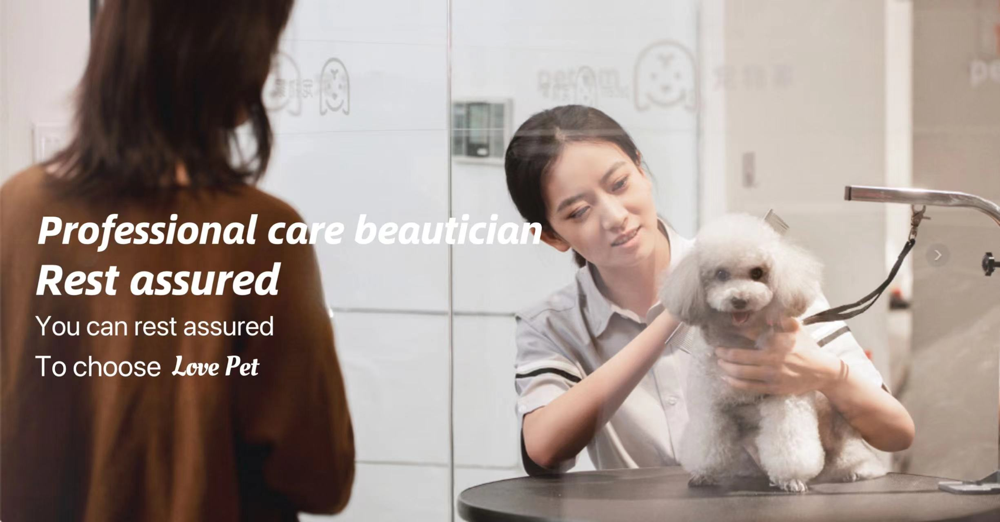

Welcome to our pet store! We are a passionate and caring team dedicated to providing the highest quality service and care for every pet.
Our mission is to create a warm and safe environment for your pets, allowing them to feel the love of a family. We offer a variety of professional services, including:
We believe that love and care are key to pet happiness, and we look forward to providing your pets with the ultimate experience and service. Thank you for choosing us to be part of our family!
In our pet store, we provide a variety of professional services to meet the needs of every pet. Here are our main services:
Our team consists of experienced pet care experts dedicated to providing the highest quality service for your pets. Feel free to contact us for more service details!
“This store is amazing! The service attitude is great, and the pet care is very professional.”
“The boarding service is very considerate, and the staff are friendly. I trust them with my dog.”
“Their training courses are very effective; my dog's behavior has improved a lot. Highly recommended!”